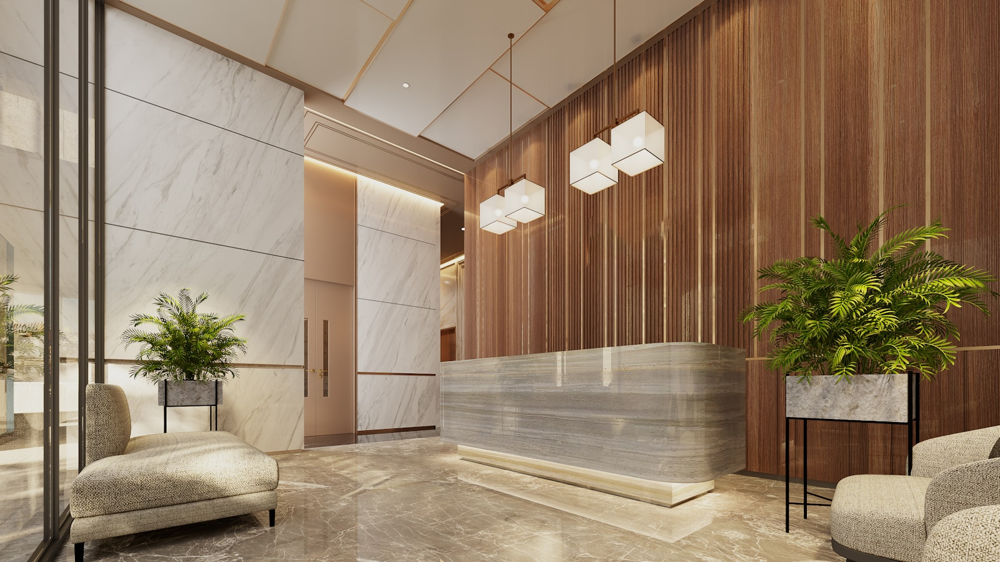

Know. Compare. Choose.
美しさに、
正しい選択肢を。
髪、肌、目、歯、身体。美容医療には、いくつもの選択肢があります。
知る。比べる。そして、自分で選ぶ。
あなたの選択を支える、美容医療総合ガイド。
Categories
Where do you begin?
気になる場所から、静かに始める。
01 — Find Your Concern
Start from you.
悩みから、選択肢を知る。
施術の名前を、知らなくてかまいません。いま気になっていることを、そのままの言葉で選んでください。 そこから治療の選択肢へ、静かにご案内します。
02 — Discover Treatments
Options you didn't know.
知らなかった選択肢に、出会う。
すべての治療ガイドは、同じ編集の型で書かれています。良いことだけを並べない。 リスクも費用も、判断に必要な材料をひとつの机の上に置く。それが私たちの編集方針です。
編集方針について
特定の施術を過度に推奨する構成は採用していません。治療効果を保証する表現、
過度なビフォーアフター表現は掲載しません。効果・経過には個人差があります。
最終的な治療の判断は、必ず医師の診察のもとで行ってください。
各治療ガイドに載っている10の項目
- 治療概要
- 治療方法
- メリット
- デメリット
- 想定されるリスク・副作用
- 費用の目安
- ダウンタイム
- 治療期間
- 向いている可能性がある人
- 医師へ確認すべきポイント
03 — Find a Clinic
A fair way to search.
クリニック選びにも、比較できる基準を。
エリア、施術、料金、診療時間、設備・サービス。ひとつの条件だけで決めないために、 複数の条件を重ねて検索できます。

静かな空間で、納得できるまで相談できる場所を。SEARCH →04 — Compare
Beyond the price.
価格だけでは、決めない。
施術内容、料金、追加費用、保証・アフターケア、医師の情報、アクセス、診療時間、 カウンセリング、支払い方法。判断の材料を、横に並べて見比べられます。 広告掲載を含む場合は、その旨を明示します。
| AクリニックPR | Bクリニック | Cクリニック | |
|---|---|---|---|
| 施術内容 | 内服・外用・注入 | 内服・外用 | 内服・注入・自毛植毛 |
| 費用の目安 | 月々 ○,○○○円〜 | 月々 ○,○○○円〜 | 月々 ○,○○○円〜 |
| 追加費用 | 初診料・検査費あり | なし（薬代のみ） | 検査費あり |
| 保証・アフターケア | 全額返金制度あり※条件 | 定期経過観察 | 術後1年フォロー |
| カウンセリング | 無料・オンライン可 | 無料 | 初回有料 |
| 診療時間 | 10:00–19:00 | 11:00–20:00 | 9:30–18:30 |
| 支払い方法 | 現金・カード・医療ローン | 現金・カード | 現金・カード・分割 |
| 公式サイトで詳細を見る | 料金・施術内容を確認 | カウンセリング情報を見る |
※「PR」表記のあるクリニックは、当サイトが広告料を受領している広告掲載です。掲載順・評価は広告の有無と切り離して編集しています。
※ 費用は自由診療のため全額自己負担です。金額・内容は各クリニックの公式情報を必ずご確認ください。
05 — For Men
Quietly, for yourself.
誰にも急かされず、自分のために。
プライバシー性の高い悩みこそ、静かな場所で調べられるべきだと考えています。 男性の美容医療も、同じ基準・同じ編集方針で。煽らず、事実だけを整えて。
06 — Knowledge
Read before you choose.
選ぶ前に、知っておく。
Movie
Watch & learn.
読む前に、観て掴む。
医師・医療機関が公開している解説動画を、カテゴリー別に選びました。 文章より先に、全体像をつかみたいときに。
HAIR / AGA
薄毛・AGAの仕組みを医師監修で徹底解説
メディバリー大学病院／医師監修
EYES / ICL
眼科医が教えるICLの全て（検査・費用・リスク）
眼科医 上月直之
BODY
医療脱毛の正しい知識｜仕組み・効果・リスク
あつた皮ふ科・美容皮膚科クリニック
※ 動画は各医療機関・医師がYouTubeで公開しているものを学習用として紹介しています。当サイトの広告掲載とは関係ありません。